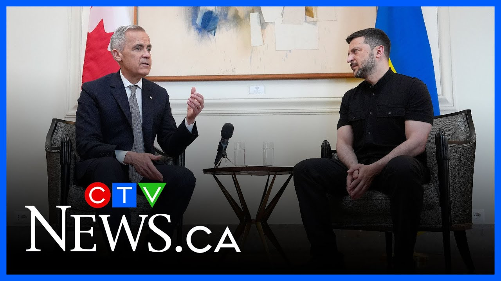

【总理马克·卡尼会见世界领导人 | 马克·卡尼在罗马】
Summary: Prime Minister Mark Carney is in Rome for Pope Leo I 14th's inaugural mass and meetings with world leaders, including Italian leaders and the Pope, ahead of Canada hosting the G7 summit.
摘要： 总理马克·卡尼在罗马参加教皇利奥十四世的就职弥撒，并与世界领导人会晤，包括意大利领导人和教皇，为加拿大下月主办G7峰会做准备。

⏱️ Estimated Reading Time: 4 min
Prime Minister Mark Carney is in Rome for the inaugural mass of Pope Leo I 14th.
总理马克·卡尼在罗马参加教皇利奥十四世的就职弥撒。
While there, he is meeting with several other world leaders.
在此期间，他还会见了几位其他世界领导人。
CTV's Abigail Bean has more on the prime minister's agenda.
CTV的艾比盖尔·比恩将为您详细报道总理的行程。
The prime minister has landed in Rome and has meetings with world leaders ahead of attending Pope Leo I 14th's inaugural mass tomorrow.
总理已抵达罗马，并在明天参加教皇利奥十四世的就职弥撒前与世界领导人会晤。
Carney brought his wife and his daughter Cleo on this trip.
卡尼此次携妻子和女儿克莱奥同行。
His first meetings today are with Italian Prime Minister Georgia Maloney as well as the Italian President.
他今天的首次会晤是与意大利总理乔治亚·马洛尼以及意大利总统。
For the newly elected Prime Minister, it is the first time he will meet both of them in person.
对新当选的总理来说，这是他首次与他们面对面会晤。
Other meetings with world leaders are also expected this weekend, as well as an audience with the Pope on Sunday after the inaugural mass.
本周末还将与其他世界领导人会晤，并在周日就职弥撒后与教皇会面。
Carney is himself a practicing Catholic.
卡尼本人是一名虔诚的天主教徒。
A senior government source tells CTV News his faith played into his decision to attend this weekend, but that it's also about the opportunity to connect with other world leaders attending the event as well.
一位政府高级消息人士向CTV新闻透露，他的信仰影响了他参加本周末活动的决定，但这也是与其他与会世界领导人建立联系的机会。
Foreign affairs experts tell CTV News the meetings in Rome are an important relation-building opportunity ahead of Canada hosting the G7 next month in Alberta.
外交专家告诉CTV新闻，罗马的会晤是加拿大下月在阿尔伯塔主办G7峰会前的重要关系建设机会。
Joining Carney on this trip is a 19-person delegation including MPs, senators, and representatives of indigenous groups.
此次陪同卡尼出访的还有一个19人代表团，包括议员、参议员和原住民团体代表。
The inaugural mass is expected to draw as many as 200,000 people to St. Peter Square Sunday.
周日的就职弥撒预计将吸引多达20万人前往圣彼得广场。
Abigail Beman, CTV News, Rome.
CTV新闻，艾比盖尔·比曼，罗马报道。
The prime minister sat down with Ursula Vander Lion, the president of the European Commission.
总理会见了欧盟委员会主席乌尔苏拉·冯德莱恩。
I want to thank you for your leadership, European Union leadership, the close partnership we have between Canada and the European Union.
我要感谢您的领导，欧盟的领导，以及加拿大与欧盟之间的紧密伙伴关系。
And if I may, at a time where the world is more dangerous and divided, a partnership that is ever more important and I hope that can continue to grow.
请允许我说，在世界更加危险和分裂的时刻，这种伙伴关系愈发重要，我希望它能继续发展。
Ottawa has been working on strengthening its relationship with European allies in light of Donald Trump's tariff and annexation threats.
鉴于唐纳德·特朗普的关税和吞并威胁，渥太华一直在努力加强与欧洲盟友的关系。
Ukraine has also been a hot topic.
乌克兰也是一个热门话题。
Earlier this week, leaders of the European Union expressed full support for Ukraine, confirming new packages of sanctions against Russia.
本周早些时候，欧盟领导人表达了对乌克兰的全力支持，确认了对俄罗斯的新制裁方案。
The prime minister also sat down with Ukrainian President Vladimir Zalinski.
总理还会见了乌克兰总统弗拉基米尔·泽连斯基。
Many important issues to discuss.
有许多重要议题需要讨论。
Uh very fluid situation.
呃，局势非常多变。
Um and uh one last point, I I very much look forward to welcoming uh the president to Canada in less than a month uh for the G7 uh summit.
嗯，呃，最后一点，我非常期待在一个月内欢迎呃总统来加拿大参加G7呃峰会。
This is the first time the two leaders are meeting face to face since Carney became prime minister.
这是卡尼就任总理以来两位领导人首次面对面会晤。
Although Ukraine is not a G7 member, Carney has invited Zalinski to next month's G7 summit being hosted in Alberta.
尽管乌克兰不是G7成员，卡尼已邀请泽连斯基参加下月在阿尔伯塔举行的G7峰会。